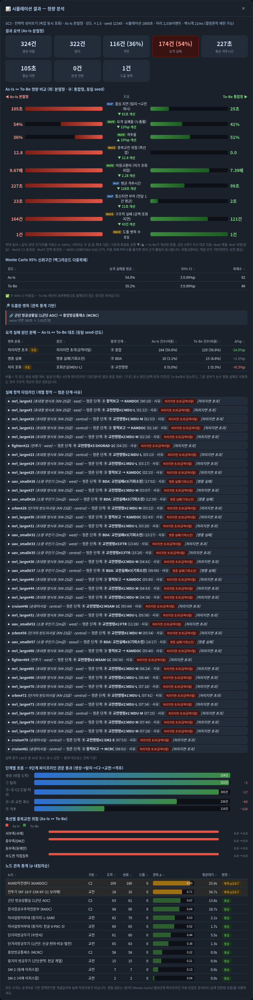
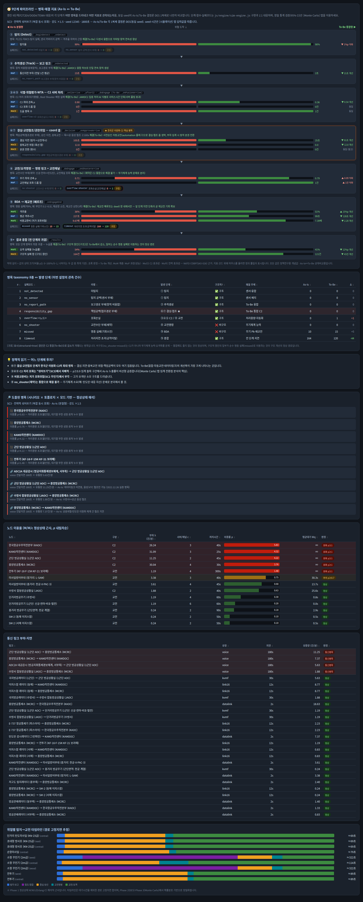
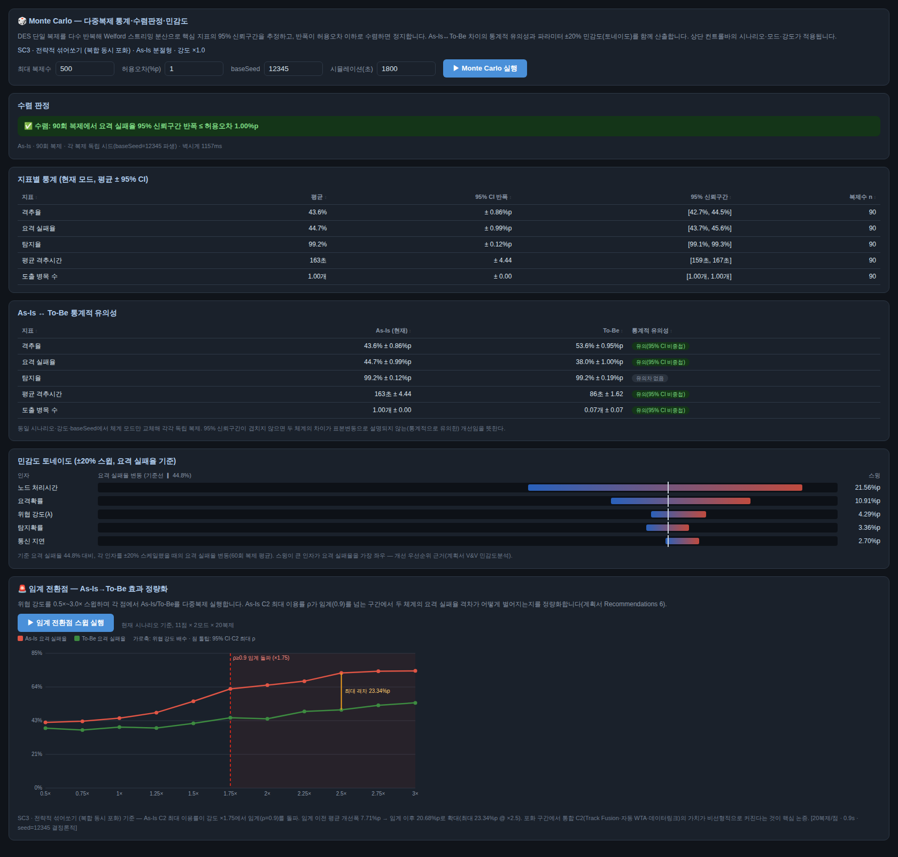

이 시뮬레이터는 한국군 방공·미사일방어 지휘통제(C2) 구조의 병목이 어디서, 왜 생기는지를 정량적으로 보여주고, 현행 분절형 체계(As-Is)와 K-JAMDS 통합형 체계(To-Be)의 차이를 같은 조건에서 나란히 비교하는 정책연구용 도구입니다.
| 모드 | 구조 | 특징 |
|---|---|---|
| As-Is 분절형 | 육·해·공 개별 C2 계통이 분리 운용 | 육↔공 협조가 음성(≥180초)에 의존, 항적 비융합(중복항적), 상위 제대 승인 필요 |
| To-Be 통합형 | JAMDC2(Track Fusion) 허브가 전 센서·C2를 연결 | 다중센서 융합 단일 항적, 데이터링크(~2초), 위협별 사전승인 자동교전, Best-Shooter 무기배정 |
| 시나리오 | 상황 | 무엇을 관찰하는가 |
|---|---|---|
| SC1 교전 중복·책임 공백 | 저속기·헬기·무인기·순항미사일이 서부·수도권·중부 책임구역 경계로 접근 | 서로 다른 통제계통(군단 AOC·수방사 JAOC·공군 MCRC)이 같은 위협을 두고 협조가 늦어 생기는 중복교전 위험과 책임공백 |
| SC2 무인기 대응 실패 | 소형 무인기 8대 동시 남파(2022.12.26 확대 재현) + 산발 침투 | 저고도·저피탐 표적의 탐지 반복 실패, 낮은 요격확률, 고가 요격수단 소모(비용교환비) |
| SC3 전략적 섞어쏘기 | 탄도탄·방사포·순항·무인기·전투기가 전 축선 동시 공격(복합 포화) | C2 처리용량 초과(ρ≥0.9) 구간에서 As-Is 누출률이 비선형 급증하는 임계 전환점과 To-Be 개선폭 |
위협은 4개 개념 축선을 따라 북측 개념 발사권역에서 남쪽 표적권역으로 이동합니다 (전부 도시 수준 개념좌표 — 실제 발사원점·침투경로가 아님).
| 축선 | 진입점(개념) | 표적권역(개념) | 주요 위협 |
|---|---|---|---|
| 서부축(서해) | 해주 인근 | 서울 | 무인기·저속기·순항·전투기 |
| 중부축(DMZ) | 평강 인근(종심) | 오산·평택 권역 | 탄도탄·방사포·순항·무인기·전투기 |
| 동부축(동해안) | 원산 인근 | 강릉 권역 | 방사포 |
| 수도권 직접침투 | 개성 인근 | 서울 도심 | 무인기(2022.12.26 재현)·저속기·헬기 |
cd Air_Defense # 저장소 폴더 ./scripts/serve.sh # 로컬 서버 시작 # 브라우저에서 http://localhost:8000 접속
정적 웹페이지라 설치·빌드가 필요 없습니다. 외부 의존성은 지도 라이브러리(Leaflet CDN)
하나뿐이며, 인터넷이 차단된 환경에서는 지도가 자동으로 내장 SVG 개념도로 대체되고
나머지 기능은 동일하게 동작합니다. FULL 배치·Monte Carlo는 위 로컬 서버 실행을 권장합니다.
서버 실행에서는 계산이 Web Worker로 분리되어 지도·토글이 계속 반응하지만, 단일 HTML을
file://로 열면 결정론적 메인 스레드 폴백으로 동작해 큰 실행 중 잠시 멈출 수 있습니다.
주소창의 해시(#tab=sim&sc=sc3&mode=asis&x=1.5&seed=12345)에
현재 설정이 항상 반영됩니다. 이 URL을 복사해 전달하면 받은 사람이 완전히 동일한
세팅과 결과를 재현할 수 있습니다(§8 "seed·결정론" 참조).
| 컨트롤 | 의미 | 사용 팁 |
|---|---|---|
| 시나리오 | 위협 구성(어떤 위협이 어느 축선으로 분당 몇 건 도착하는지)을 결정 | 목적에 맞는 시나리오 선택(§1.3) |
| 체계 모드 | As-Is 분절형 ↔ To-Be 통합형 토글 | 결과창·분석 탭은 두 모드를 자동으로 함께 계산해 비교해 주므로, 이 토글은 "지도에 어느 구조를 그릴지"에 가깝습니다 |
| 위협 강도 × | 모든 위협 도착률에 곱하는 배수(0.5~3.0) | ×1.5~×2.0부터 병목이 잘 드러나고, SC3는 ×1.75 부근에서 임계 돌파(기본 seed 기준) |
| seed | 난수 시드 — 같은 seed·설정이면 결과가 항상 동일(결정론) | 보고서에 인용할 결과는 seed를 기록해 두세요 |
| 시간(초) | 시뮬레이션 길이(기본 1800초=30분) | 짧으면 표본이 적어 흔들립니다. 통계 주장은 MC 탭으로 |
| 요소 | 표시 | 의미 |
|---|---|---|
| 지휘통제(C2) 노드 | ■ 주황 사각형 | KAOC·MCRC·KAMDOC·군단 AOC·수방사 JAOC·(To-Be)JAMDC2 — 항적 처리·교전승인을 수행하는 대기행렬 서버 |
| 탐지 센서 | ● 파랑 원 | 레이더·조기경보기·이지스함 등. 파랑 점선 링 = 탐지범위(개념) |
| 요격 무기 | ▲ 초록 삼각형 | 전투기·지대공·함대공. 초록 링 = 교전범위(개념) |
| C2 연결선 | 파랑 실선/파선 | 합동·공군·해군 계열 자동 항적 전파(2~12초). 우측 하단 범례의 표시 체크박스로 전체 연결선을 숨기거나 복원 |
| 데이터링크 KVMF | 청록 파선 | 육군 체계 간 데이터링크(~30초) |
| 음성보고 | 빨강 점선 | As-Is 육↔공 협조(≥180초) — 핵심 병목의 시각적 표현 |
| 병목/포화 노드 | 🔴 점멸 테두리 | 이번 실행에서 도출된 병목(고정 아님) |
| 위협 | 붉은 계열 ● | 밝은 적색(무인기·저속기·헬기) → 진한 적색(탄도탄·방사포). 북측 개념 진입점에서 출발해 남하 |
노드를 클릭하면 팝업으로 역할·부하(λ, ρ)·교전 제약(예: 신궁·천마 탄도탄 불가)을 보여줍니다. 좌상단 위협 항적 로그에서 개별 위협을 클릭하면 그 위협의 9단계 진행 상황(탐지→보고→처리→승인→교전→격추/실패)을 실시간으로 추적할 수 있습니다.
재생 속도(10×~120×), ⏸ 일시멈춤, 범위 링·C2 연결선 표시 토글을 지도 우측 하단 범례에서 조작합니다. 재생이 끝나면 결과창이 자동으로 열립니다.

결과창은 위에서 아래로 다음 순서로 읽습니다:
이 탭은 "어느 단계에서 병목이 생기고, 무엇으로 관측하며, To-Be가 어떻게 해결하는가"를 엔진의 9단계 처리 파이프라인 순서 그대로 보여줍니다. 모든 지표는 현재 시나리오·강도·seed로 As-Is/To-Be를 각 1회씩 결정론 실행해 나란히 비교한 값입니다.

| 단계 | 병목(무엇이 막히나) | 관측 지표 / 실패코드 |
|---|---|---|
| ① 탐지 | 저고도·저피탐 탐지 실패, 센서 커버리지 공백 | 탐지율 / not_detected·no_sensor |
| ② 추적생성(보고) | 항적 비융합, 보고경로 부재 | 통신지연 부하 / no_report_path |
| ③④⑤ C2 처리 (식별·평가·무기배정) | C2 대기행렬 포화 | C2 최대 ρ·드롭·병목 수 / overflow:<C2노드> |
| ⑥⑦ 결심·교전협조 ★ | 한국군 이원화 C2의 최대 병목 — 음성 협조 지연·책임공백·중복교전 | 결심 지연·중복교전 위험·분권 전환 / responsibility_gap |
| ⑧ 교전명령 | 교전수단 제약(신궁·천마↔탄도탄), 교전채널 포화 | 무기 ρ·드롭 / no_shooter·overflow:<무기> |
| ⑨ BDA·재교전 | 명중 실패(낮은 요격확률), 체공창 소진 | 격추율·평균 격추시간·비용교환비 / missed·timeout |
| 결과 종합 | 전 단계의 귀결 | 요격 실패율(누출률)·구조적 실패 합 |
파이프라인 아래에는 병목 taxonomy 8종 표(§8.2와 동일), 정책적 읽기(어느 단계에 투자할 것인가), 그리고 수식 기반(M/M/c) 정상상태 근사로 계산한 노드 이용률 표·통신 링크 부하표· 위협별 타임라인이 이어집니다. 링크 표에서는 유형(voice/kvmf/link16/datalink)별 지연과 통신병목 판정을 볼 수 있습니다.
단일 실행은 난수의 우연에 좌우될 수 있습니다. 이 탭은 같은 설정을 수십~수백 번 반복(복제)해 평균과 95% 신뢰구간(CI)을 추정하고, As-Is↔To-Be 차이가 우연이 아님을 확인하는 곳입니다.

모든 수치의 출처와 신뢰도 등급(A: 공식문서 / B: 언론·논문 2차 / C: 개념 추정)은
docs/params.md에 파라미터 ID로 등재되어 있습니다.
| 용어 | 설명 |
|---|---|
| DES (이산사건 시뮬레이션) | 위협 하나하나를 개별 객체로 만들어 탐지→보고→처리→교전의 사건을 시간 순으로 전개하는 방식. 이 도구의 계산 엔진. |
| M/M/c/K 대기행렬 | C2·무기 노드의 수학 모델. 도착(λ)과 처리시간이 확률적이고, 서버(결심 라인/교전채널) c개, 대기실 포함 최대 수용 K를 넘는 도착은 드롭(항적/교전기회 상실)됩니다. |
| λ (도착률) | 분당 도착 위협/항적 건수. 시나리오와 강도 슬라이더가 결정. |
| ρ (이용률) | 서버가 바쁜 시간 비율(0~1). 0.7 주의 / 0.9 병목 / 드롭 발생 시 포화. 0.9 부근부터 대기시간이 비선형 폭증합니다. |
| Wq / Lq | 평균 대기시간(초) / 평균 대기열 길이(건). 포화 진단의 보조 지표. |
| dwell (체공창) | 위협이 요격 가능 공역에 머무는 시간(개념값). 이 안에 격추하지 못하면 누출. 탄도탄은 90초 내외로 짧아 승인 지연 = 요격기회 상실이 됩니다. |
| Pk (요격확률) | 교전 1회의 명중 확률(개념 분포). 소형 무인기는 0.1~0.5로 낮게 설정(2022.12.26 격추 실패 반영). |
| seed · 결정론 | 모든 난수는 seed에서 파생됩니다. 같은 설정+같은 seed = 항상 같은 결과. 재현·공유·디버깅의 기반. |
| burst | 일회성 동시 다발 침투(예: SC2 무인기 8대 동시 남파). 연속 도착 스트림과 구분. |
| Track Fusion (JAMDC2) | To-Be의 핵심 — 여러 센서가 본 같은 위협을 단일 연속 항적으로 융합해 전 계통에 공유(Any Sensor). |
| WTA / Best-Shooter | 무기-표적 할당. As-Is는 부하가 적은 무기 선택에 그치지만, To-Be는 위협 고도대역별 적합도×잔여 용량 점수로 최적 무기를 고릅니다(Best Shooter). 단, 신궁·천마의 탄도탄 교전 불가 같은 제약이 항상 우선. |
| 분권 전환 (동적 권한위임) | 승인권자 대기열이 임계를 넘으면 결심을 하위/자동으로 위임하는 동작. 부하의 함수라 저강도에서는 발생하지 않습니다. |
| 자동화 차등 | 위협별 결심 방식 — 유인결심(human-in-loop) / 감독자동(human-on-loop) / 사전승인(auto-preauth). To-Be에서 무인기·탄도탄은 사전승인 자동교전. |
| F2T2EA / OODA / TEWA | 표적처리 킬체인(Find-Fix-Track-Target-Engage-Assess) / 결심 루프(관측-판단-결심-행동) / 위협평가·무기할당. 엔진 9단계가 이들과 1:1 매핑됩니다([분석] 탭 카드에 표기). |
| MoP / MoCE / MoFE | NATO 지표 계층 — MoP 과정 성능(결심 지연·통신지연·격추시간) / MoCE C2 효과성(중복교전 위험·구조적 실패·병목 수) / MoFE 전력 효과(누출률·격추율·비용교환비). |
| 95% CI · 수렴 | 신뢰구간 — "참값이 이 범위에 있을 것"의 통계적 표현. 두 모드의 CI가 겹치지 않으면 차이가 유의합니다. |
| 임계 전환점 | As-Is C2 최대 ρ가 0.9를 처음 넘는 위협 강도. 이 이후 구간에서 To-Be 개선폭이 비선형으로 커집니다. |
| 비용교환비 | 저가 포화위협(무인기·방사포) 대응에 소모한 요격탄 개념비용 ÷ 격추한 위협의 개념가치. >1이면 아군이 더 비싼 자원을 소모. 주의: To-Be가 항상 개선되는 지표가 아닙니다(시나리오·강도에 따라 반전 가능). |
| 누출률(요격 실패율) | 생성 위협 중 격추하지 못하고 공역을 통과한 비율 — 모든 단계 병목의 최종 귀결. |
| KVMF / Link-16 / SAWS | 육군 계열 데이터링크(~30초) / 합동·공군·해군 전술데이터링크(~12초) / 일방향 위성 경보방송(교전용 항적으로 사용 불가). |
| 코드 | 라벨 | 발생 단계 | 구조적? | 해결 주체 |
|---|---|---|---|---|
not_detected | 미탐지 | ① 탐지 | ✅ | 센서·융합 |
no_sensor | 탐지 공백(센서 부재) | ① 탐지 | ✅ | 센서 배치 |
no_report_path | 보고경로 부재(항적 비융합) | ② 추적생성 | ✅ | To-Be 융합 |
responsibility_gap | 책임공백(협조경로 부재) | ⑥⑦ 결심·협조 ★ | ✅ | To-Be 통합 C2 |
overflow:<노드> | 포화손실 | ③④⑤ C2 / ⑧ 교전 | ✅ | 처리용량·자동화 |
no_shooter | 교전수단 부재(제약) | ⑧ 교전명령 | ❌ | 무기체계 능력 |
missed | 명중 실패(기회소진) | ⑨ BDA | ❌ | 무기 Pk·재교전 |
timeout | 처리지연 초과(공역이탈) | ⑨ 종합 | ✅ | 전 단계 지연 |
no_shooter·missed)는 C2가 아니라 무기체계 능력·요격확률의 문제라
통합해도 줄지 않는 것이 정상입니다. To-Be에서 구조적 원인이 줄고 그 일부가
missed로 옮겨가는 것이 구조 개선의 정상 경로입니다.| 시나리오 | 주목할 화면 | 기대되는 패턴 |
|---|---|---|
| SC1 | 축선별 중복교전 위험, 링크 표의 voice 협조 | As-Is에서 서부·수도권·중부 경계 위험>0, To-Be에서 0으로 해소. 결심 지연 대폭 단축 |
| SC2 | 실패 타임라인(명중 실패 다수), 비용교환비 | 구조 개선 후에도 missed가 남음(저Pk는 무기 문제) — 비용교환비 수십 배(고가 요격탄 소모 구조) |
| SC3 | 노드 ρ표(KAMDOC·KAOC·AOC), 임계 전환점 | ×1.75 부근 임계 돌파(기본 seed) 후 As-Is 급증 — 임계 이후 개선폭 확대가 핵심 논증 |
| 증상/질문 | 답 |
|---|---|
터미널 링크(http://[::]:8000/)를 눌러도 안 열려요 | ./scripts/serve.sh로 실행하세요 — 항상 바로 열리는 http://127.0.0.1:8000 링크가 뜹니다. |
| 지도가 안 뜨고 "SVG 개념도로 표시 중"이 나와요 | 정상입니다 — 인터넷(지도 CDN)이 차단된 환경의 자동 대체 모드로, 시뮬레이션·분석 기능은 동일합니다. |
| seed를 바꿨는데 결과가 그대로예요 | [↺ 다시 실행]을 눌러야 반영됩니다(상태줄 안내 참조). [분석] 탭은 자동 반영. |
| 병목이 하나도 안 나와요 | 병목은 부하의 함수입니다 — 강도를 올리거나(SC3 ×2 권장) 시나리오를 바꿔 보세요. |
| 분권 전환이 항상 0건이에요 | 승인권자 대기열이 임계를 넘어야 발생합니다. 기본 seed 기준 SC3 ×2.0 이상의 As-Is에서 관측됩니다. |
| 같은 설정인데 결과창 숫자와 MC 평균이 달라요 | 결과창 상단은 1복제(해당 seed), MC는 다수 복제의 평균입니다. 서로 다른 것이 정상. |
| FULL·Monte Carlo 실행 때 화면이 멈춰요 | file:// 단일본 대신 저장소에서 ./scripts/serve.sh를 실행해 접속하세요. 무거운 계산이 Web Worker로 분리됩니다. |
| 결과를 남에게 그대로 보여주고 싶어요 | 주소창 URL(해시 포함)을 복사해 전달하세요 — 동일 세팅·동일 결과가 재현됩니다. |
| 이 수치를 실제 작전 판단에 써도 되나요 | 안 됩니다. 전부 공개자료 기반 정책연구용 개념값입니다(표지 디스클레이머). |
# 회귀 테스트 전체 (구문 + 7개 스위트) node tests/run-all.js # 웹 UI ./scripts/serve.sh # → http://localhost:8000 # 이 가이드 PDF 재생성 node scripts/build-guide-pdf.mjs # 화면 스크린샷 재캡처 ./scripts/serve.sh & && node scripts/capture-metrics.mjs http://localhost:8000
| 문서 | 내용 |
|---|---|
README.md | 개요·실행·구조 |
docs/params.md | 모든 수치의 출처·신뢰도(A/B/C) 파라미터 근거표 |
docs/vv-report.md | 검증(V&V) 보고서 — 9단계↔표준 프레임워크 매핑, 한계 |
docs/metrics-verification.md | 18개 지표 구현·시각화 감사 보고서 |
docs/분석가_가이드.md | 1분 시작용 요약 가이드(본 문서의 축약판) |
본 문서의 모든 수치·좌표·확률·범위는 공개자료 기반 정책연구용 개념값이며 실제 작전자료가 아닙니다. — K-JAMDS C2 시뮬레이터 사용자 가이드